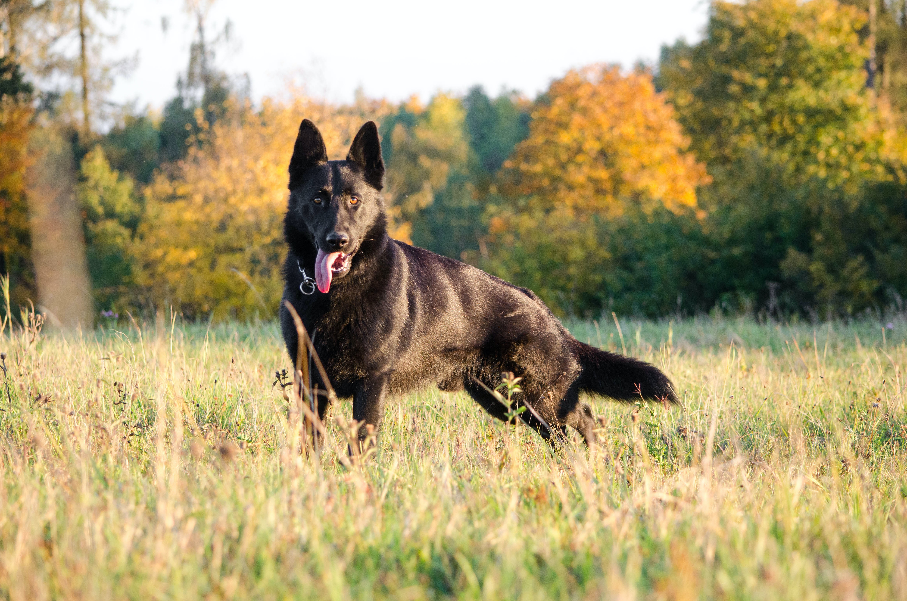
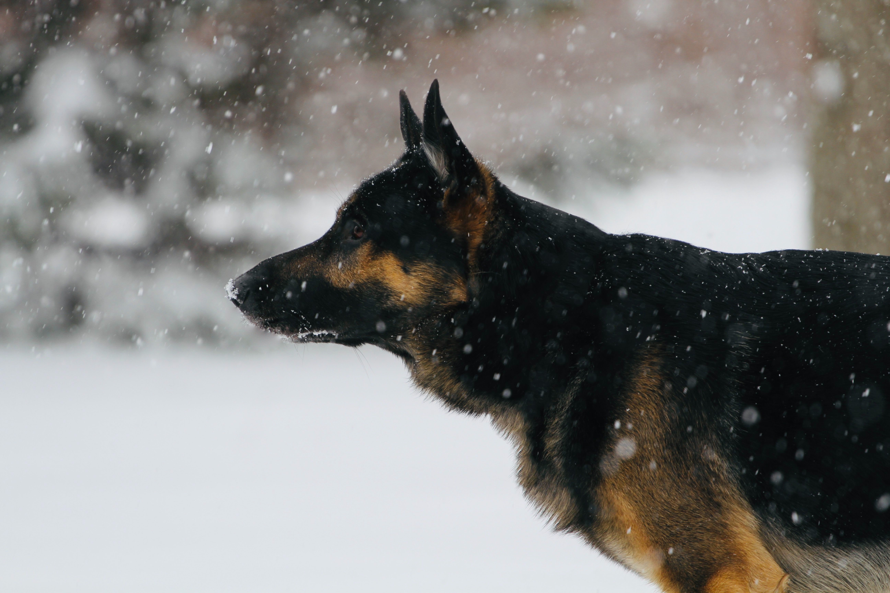

Pastor Alemão
lobo-da-alsáciaPastor-alemão (em alemão: Deutscher Schäferhund) ou lobo-da-alsácia é uma raça canina proveniente da Alemanha. Em sua origem era utilizado como cão de pastoreio de rebanhos. Atualmente é mais utilizado como cão de guarda e cão policial (K9).
Na Alemanha durante o século XIX existiam três variedades de cães de pastoreio na região da Suábia, Turíngia e Württemberg, respectivamente. Segundo relatos, estes cães seriam híbridos de lobos com cães trazidos a estas regiões. Especula-se ainda um possível parentesco com a raça Pastor-da-boêmia, que é bastante antiga, mas não há fatos que comprovem esta relação. Ao final do século XIX teve início, ainda que sutil, um movimento pela padronização dos cães alemães com a fundação da Phylax Society em 1891, que reuniu também as variedades de cães pastores com este mesmo fim.
O pastor alemão é considerado um cão fiel, atento, seguro, autoconfiante, equilibrado, inteligente e altamente destemido. Considerado fácil de adestrar, tem boa convivência com crianças da família e outros cães, desde que socializado. É reservado com estranhos e é bastante alerta, não recua mediante ao perigo mesmo sob forte agressão inclusive de armas de fogo ou explosivos, qualidades que lhe favorecem a função de guarda, da qual não raramente é citada por muitos como o mais eficiente.
O pastor alemão é reconhecido como o cão policial e militar mais bem sucedido do mundo, sendo utilizado tradicionalmente nesta função ao decorrer de mais de um século, devido a sua grande inteligência e versatilidade. Embora, hoje esteja disputando espaço com o Pastor belga malinois.

- Origem: Alemanha
- Porte: Grande
- Altura: 55cm à 65cm
- Peso: 22kg à 40kg
- Expectativa de vida: 14 anos
- Característica forte: Lealdade
O pastor-alemão é um cão de porte grande. De acordo com o padrão da raça os machos possuem entre 60 e 65 cm na altura da cernelha e pesam entre 30 e 40 kg. E as fêmeas possuem entre 55 e 60 cm na altura da cernelha e pesam entre 22 e 32 kg.
Sua pelagem — de sub-pelo denso e acinzentado — em questão de cor varia em: pelagem bicolor marrom (avermelhado ou amarelado) com capa preta; pelagem bicolor Melanistico (quase inteiramente preto com patas e outras marcas castanhas; pelagem unicolor totalmente preta; e pelagem Sable (agouti)